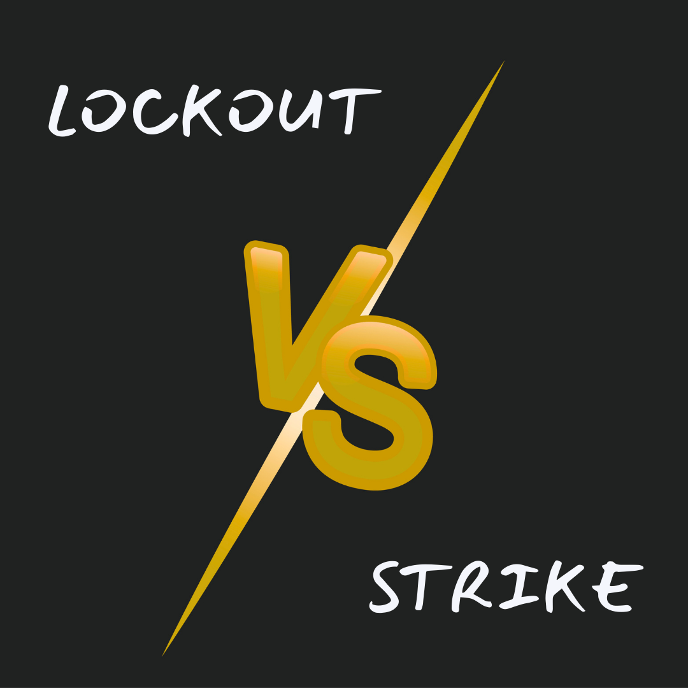

Lockout vs. Strike – What we are doing and why that matters

The Dalhousie Faculty Association was locked out by the administration of Dalhousie University on Wednesday, August 20th, 2025. The more astute observers might have also noticed that we called a retaliatory strike in response. This post is meant to help you understand the difference between those things and why both occur.
A lockout and a strike are both significant events in the context of labour relations, but they are fundamentally different in their origins, processes, and impacts on workers. Understanding these distinctions is crucial to appreciating the dynamics between employees and employers, especially in complex environments like universities.
Defining Strikes and Lockouts
A strike is a form of collective action by workers and a constitutional right in Canada . When negotiations over issues like working conditions, pay, or benefits break down, employees represented by a union may decide to stop working as a method of protesting and applying pressure on their employer to agree to better terms. This action is almost always the result of a democratic process within the union; workers vote on whether to strike, and this vote reflects the collective will of the group.
On the other hand, a lockout is initiated by the employer. Instead of workers refusing to work, it is the organization that shuts down operations, preventing employees from coming to work and suspending their wages. The goal of a lockout is to compel workers to accept certain terms, usually those that the management believes are necessary for the institution’s sustainability or strategic direction.
Who Drives the Decision?
One of the most significant differences is who initiates each action. A strike emerges from the grassroots — it’s worker-driven, a coordinated act of protest reflecting the collective voice. At Dalhousie University, a strike by faculty or staff would be initiated only after extensive deliberation within the DFA. While the DFA delivered a strong strike mandate, we remained committed to finding a fair deal and were prepared to continue working while we negotiated with the university.
A lockout is decisively different in its top-down nature. At Dalhousie, the authority to enact a lockout resides with the university administration led by the president, Dr. Kim Brooks, and Board of Governors. While this decision might involve consultation with other executives and legal counsel, it ultimately is executed as a single directive. This unilaterality means that a lockout can be enacted swiftly and with little notice to staff, in stark contrast to the deliberative process required for a strike.
How Lockouts Impact Workers Differently
The impacts of lockouts are particularly keen on workers for several reasons:
During a lockout, workers are prevented from doing their jobs and lose their regular income; the university may also restrict their access to email and other systems critical for their work, further compounding the disruption.
Unlike a strike — where the choice to walk out is made collectively by workers — a lockout removes agency from the workforce, making them passive participants in the dispute.
A lockout can be indefinite or short-term, with the administration controlling the timeline and conditions for workers’ return. This creates significant uncertainty and financial hardship for faculty and staff, potentially pressuring them to accept terms they find unfavourable.
- These last two impacts are important for understanding why the DFA was required to call a retaliatory strike, as now the decision to return to work rests at the bargaining table, not in the hands of the administration.
At institutions like Dalhousie, a lockout’s effect ripples beyond faculty and staff to disrupt classes, research, and campus life, with students and the broader academic community all feeling the consequences.
Why Organizations Turn to Lockouts
Employers like universities may use a lockout as a strategic tool during tense negotiations. For example, if faculty threaten to strike during contract talks (the DFA was very clear that we did not want to strike and would only do so as a very last resort), Dr. Kim Brooks and the Board of Governors might perceive a lockout as a pre-emptive move to gain leverage. The university is then able to reset negotiations and, if desired, eventually bring staff back under new terms or a renewed collective agreement.
A fundamental legal aspect is that both strikes and lockouts must comply with local labour laws. In Nova Scotia and across Canada, there are procedures and requirements for notice and the negotiation process before either can occur, ensuring that such actions are not arbitrary but subject to checks and balances. In this case, all legal requirements were followed, but Dalhousie took the unprecedented step of calling a lockout before the DFA had concluded its vote on the University’s “final” offer. For more information on Canadian labour relations, see this FAQ from the Canadian Industrial Relations Board (CIRB).
Decision-Making at the Top
What makes a lockout unique is the level of centralized decision-making involved. While a president like Dr. Kim Brooks will almost certainly seek input from her executive team, labour relations experts, and the board, the authority rests with her.
Conclusion
In summary, while both strikes and lockouts bring campus operations to a halt, the core difference lies in who is in the driver’s seat: strikes are a response by workers to employer conditions, and lockouts are an employer’s response to labour unrest. Each has deep and lasting impacts on the university community.